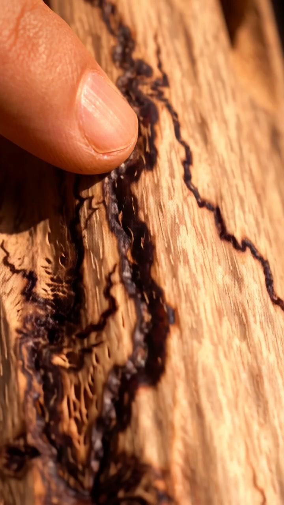

老挝料的香韵以清甜、凉意、花香为主，和越南料很接近。室温下清雅，上炉后层次分明，前调凉、尾调甜。很多老玩家盲闻都分不清老挝料和越南料。
香韵接近不是偶然：老挝和越南接壤，气候、土壤、树种都相似，结香条件也差不多。产区名不同，料子本身很像。
老挝的沉香产地分布在北部、中部和南部，北部靠近中国云南，中部和南部靠近越南。不同地区的料香韵大同小异，都是清甜凉意、花香明显，细微差别要亲自闻。
产地内部也有品质差异，关键还是看具体那块料的油脂、香韵和品相。不要迷信某个具体地名，好料子不分南北。
一是产量和流通量相对小，二是市场宣传少，三是越南料的名气太大，把周边产区都盖住了。名气小不等于品质差，只是知道的人少。
名气小也有好处：价格里没有多少品牌溢价，同样香韵和油脂的料，老挝料的价格通常明显低于芽庄料。
老挝料的油线细腻自然，颜色棕褐，深浅过渡自然。好料油脂丰富，密度中等，香韵和油脂挂钩。
外观上，老挝料的木质纹理清楚，油脂和木质交错。太黑发亮、油线像画上去的，要警惕泡油和染色。
第一，产区名不能当真假证明。证书只证明材质，不证明产地。溯源说不清的，先别买。
第二，老挝料有时会被当成越南料卖，价格翻倍。买之前问清楚产地，别为借来的名字付钱。
第三，亲自闻。清甜凉意、花香明显是老挝料的常见风格，闻着发闷、单一甜香、带化学味的，先别买。
预算有限、想体验惠安系风格的人，老挝料是很好的入门选择。日常品香熏香，老挝料的性价比很高。
已经有经验的玩家，也可以在老挝料里找高品质的料子。名气小的产区，反而容易找到被低估的好料。
| 看什么 | 老挝沉香 | 越南芽庄（对比） |
|---|---|---|
| 香韵 | 清甜凉意，花香明显 | 清甜凉意，花香明显 |
| 油脂 | 油线细腻，颜色棕褐 | 油线细腻，颜色棕褐 |
| 名气 | 相对小 | 很大 |
| 价格 | 品牌溢价少，相对亲民 | 品牌溢价明显 |
| 适合 | 预算有限的入门者 | 预算充足、追求经典产区的人 |